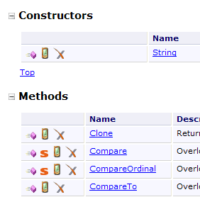
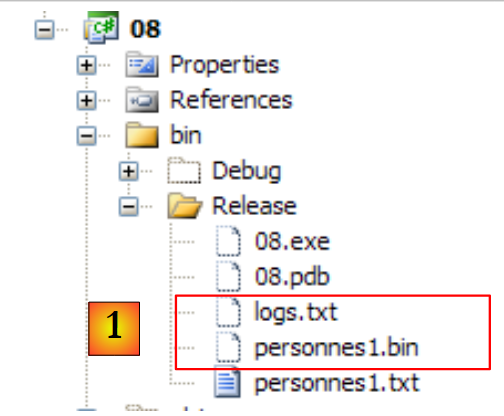

5. 常用的 .NET 类
本文将介绍.NET平台中一些常用的类。在此之前，我们将向您展示如何获取数百个可用类的相关信息。即使对于经验最丰富的C#开发人员而言，这种帮助也是不可或缺的。帮助文档的质量（易于访问、组织清晰、信息相关性等）足以决定一个开发环境的成败。
5.1. 查找 .NET 类的帮助
本文将提供一些关于如何在 Visual Studio.NET 中查找帮助的提示
5.1.1. 帮助/目录
 |
- 在 [1] 中，选择“帮助/目录”菜单。
- 在 [2] 中，选择“Visual C# Express Edition”选项
- 在 [3] 中，C# 帮助树
- 在 [4] 中，另一个有用的选项是 .NET Framework，它提供了对所有 .NET Framework 类的访问。
让我们来看看 C# 帮助中的章节标题：
 |
- [1]：C# 概述
- [2]：关于 C# 某些方面的系列示例
- [3]：C# 课程——可替代本文档。
 |
- [4]：了解更多关于 C# 的信息
- [5]：对 C++ 或 Java 开发者很有帮助。有助于避免一些常见陷阱。
- [6]：查找示例时，可以从这里开始。
 |
- [7]：创建图形用户界面所需掌握的内容
- [8]：充分利用 Visual Studio Express 集成开发环境
 |
- [9]：SQL Server Express 2005 是一款高质量的、免费提供的关系型数据库管理系统（RDBMS）。本课程将使用该软件。
C# 帮助仅是开发人员所需的一部分。另一部分则是关于 .NET 框架中数百个类的帮助，这些类将使开发工作更加轻松。
 |
- [1]: 选择关于 .NET 框架的帮助
- [2]: 帮助文档位于 .NET Framework SDK 中
- [3]：.NET Framework 类库分支按所属命名空间列出了所有 .NET 类
- [4]: System 命名空间在前几章的示例中使用最为频繁
 |
- [5]：在 System 命名空间中，例如，此处的 DateTime 结构
 |
- [6]: 关于 DateTime 结构的帮助
5.1.2. 帮助/索引/搜索
MSDN 提供的帮助内容极其庞大，您可能不知道该从何处着手。此时，您可以使用帮助索引：
 |
- 在 [1] 中，如果帮助窗口尚未打开，请使用 [帮助/索引] 选项；否则，在已打开的帮助窗口中使用 [2]。
- 在 [3] 中，指定要进行搜索的字段
- 在 [4] 中，指定要查找的内容，此处为一个类
- 在 [5] 中，显示结果
另一种查找帮助的方法是使用帮助搜索功能：
 |
- 在 [1] 中，如果帮助窗口尚未打开，请使用 [帮助/搜索] 选项；否则，在已打开的帮助窗口中使用 [2]。
- 在 [3] 中，指定您要查找的内容
- 在 [4] 中，筛选搜索字段
 |
- 在 [5] 中，以不同主题的形式显示包含搜索文本的答案。
5.2. 字符串
5.2.1. System.String 类
 |  |  |
System.String 类与简单类型 string 完全相同。它拥有许多属性和方法。以下仅列举其中的一部分：
| |
| |
| |
| |
| |
| |
| |
| |
| |
| |
| |
| |
需要注意的一点是：当一个方法返回一个字符串时，该字符串是与该方法所作用的字符串链不同的另一条字符串链。例如，S1.Trim() 返回字符串 S2，而 S1 和 S2 是两条不同的字符串链。
C 语言中的字符串可以视为一个字符数组。因此
- C[i] 表示 C 数组中的第 i 个字符
- C.Length 是 C 中字符的数量
请看以下示例：
using System;
namespace Chap3 {
class Program {
static void Main(string[] args) {
string uneChaine = "l'oiseau vole au-dessus des nuages";
affiche("uneChaine=" + uneChaine);
affiche("uneChaine.Length=" + uneChaine.Length);
affiche("chaine[10]=" + uneChaine[10]);
affiche("uneChaine.IndexOf(\"vole\")=" + uneChaine.IndexOf("vole"));
affiche("uneChaine.IndexOf(\"x\")=" + uneChaine.IndexOf("x"));
affiche("uneChaine.LastIndexOf('a')=" + uneChaine.LastIndexOf('a'));
affiche("uneChaine.LastIndexOf('x')=" + uneChaine.LastIndexOf('x'));
affiche("uneChaine.Substring(4,7)=" + uneChaine.Substring(4, 7));
affiche("uneChaine.ToUpper()=" + uneChaine.ToUpper());
affiche("uneChaine.ToLower()=" + uneChaine.ToLower());
affiche("uneChaine.Replace('a','A')=" + uneChaine.Replace('a', 'A'));
string[] champs = uneChaine.Split(null);
for (int i = 0; i < champs.Length; i++) {
affiche("champs[" + i + "]=[" + champs[i] + "]");
}//for
affiche("Join(\":\",champs)=" + System.String.Join(":", champs));
affiche("(\" abc \").Trim()=[" + " abc ".Trim() + "]");
}//Main
public static void affiche(string msg) {
// poster msg
Console.WriteLine(msg);
}//poster
}//class
}//namespace
执行后得到以下结果：
让我们来看一个新例子：
using System;
namespace Chap3 {
class Program {
static void Main(string[] args) {
// the line to be analyzed
string ligne = "un:deux::trois:";
// field separators
char[] séparateurs = new char[] { ':' };
// split
string[] champs = ligne.Split(séparateurs);
for (int i = 0; i < champs.Length; i++) {
Console.WriteLine("Champs[" + i + "]=" + champs[i]);
}
// join
Console.WriteLine("join=[" + System.String.Join(":", champs) + "]");
}
}
}
以及性能测试结果：
String 类的 Split 方法用于将字符串的元素放入数组中。此处使用的 Split 方法定义如下：
public string[] Split(char[] separator);
字符数组。这些字符代表用于分隔字符串各字段的字符。因此，如果字符串为 "field1, field2, field3"，我们可以使用 separator=new char[] {','}。如果分隔符是一系列空格，则使用 separator=null。 | |
字符串数组，其中数组的每个元素都是一个字符串字段。 |
Join 方法是 String 类的静态方法：
public static string Join(string separator, string[] value);
字符串数组 | |
用作字段分隔符的字符串 | |
由数组元素 value 通过字符串分隔符连接而成的字符串。 |
5.2.2. System.Text.StringBuilder 类
 |  |  |
前面我们提到，String 类的某些方法在应用于字符串 S1 时会生成另一个字符串 S2。System.Text.StringBuilder 类允许您直接操作 S1，而无需创建 S2 字符串。通过避免生成大量生命周期极短的字符串，这种做法能提升性能。
该类支持多种构造函数：
| |
|
StringBuilder 对象使用容量为 个字符的字符块来存储底层字符串。默认容量设置为16。上文中的第三个构造函数用于指定字符块容量。StringBuilder会自动调整存储字符串S所需的字符块数量。此外，还有用于设置StringBuilder对象最大字符数的构造函数。默认情况下，该最大容量为2,147,483,647。
以下示例说明了容量的概念：
using System.Text;
using System;
namespace Chap3 {
class Program {
static void Main(string[] args) {
// str
StringBuilder str = new StringBuilder("test");
Console.WriteLine("taille={0}, capacité={1}", str.Length, str.Capacity);
for (int i = 0; i < 10; i++) {
str.Append("test");
Console.WriteLine("taille={0}, capacité={1}", str.Length, str.Capacity);
}
// str2
StringBuilder str2 = new StringBuilder("test",10);
Console.WriteLine("taille={0}, capacité={1}", str2.Length, str2.Capacity);
for (int i = 0; i < 10; i++) {
str2.Append("test");
Console.WriteLine("taille={0}, capacité={1}", str2.Length, str2.Capacity);
}
}
}
}
- 第 7 行：创建对象 StringBuilder，块大小为 16 个字符
- 第 8 行：str.Length 是字符串 str 当前的字符数。str.Capacity 是字符串 str 在重新分配新块之前可存储的字符数。
- 第 10 行：str.Append(String S) 将字符串类型 S 追加到字符串类型 str（StringBuilder 对象）上。
- 第 14 行：创建一个块容量为 10 个字符的 StringBuilder 对象
执行结果：
这些结果表明，当容量不足时，该类会遵循其自身的算法来分配新的块：
- 第4-5行：容量增加16个字符
- 第8-9行：容量从16个字符增加到32个字符。
以下是该类的一些方法：
| |
| |
| |
| |
|
以下是一个示例：
using System.Text;
using System;
namespace Chap3 {
class Program {
static void Main(string[] args) {
// str3
StringBuilder str3 = new StringBuilder("test");
Console.WriteLine(str3.Append("abCD").Insert(2, "xyZT").Remove(0, 2).Replace("xy", "XY"));
}
}
}
及其结果：
5.3. 绘画
数组源自 Array：
 |  |  |
Array 类提供了多种方法，用于对数组进行排序、在数组中查找元素、调整数组大小等。我们将介绍该类的一些属性和方法。它们几乎都支持重载，即存在多种变体。每个数组都继承了这些属性和方法。
属性
方法
|
以下程序演示了 Array 类中某些方法的使用：
using System;
namespace Chap3 {
class Program {
// search type
enum TypeRecherche { linéaire, dichotomique };
// main method
static void Main(string[] args) {
// reading table elements typed on the keyboard
double[] éléments;
Saisie(out éléments);
// unsorted table display
Affiche("Tableau non trié", éléments);
// Linear search in unsorted table
Recherche(éléments, TypeRecherche.linéaire);
// table sorting
Array.Sort(éléments);
// sorted table display
Affiche("Tableau trié", éléments);
// Dichotomous search in sorted table
Recherche(éléments, TypeRecherche.dichotomique);
}
// entering values for the elements table
// elements: reference on table created by the
static void Saisie(out double[] éléments) {
bool terminé = false;
string réponse;
bool erreur;
double élément = 0;
int i = 0;
// initially, the painting does not exist
éléments = null;
// table element input loop
while (!terminé) {
// question
Console.Write("Elément (réel) " + i + " du tableau (rien pour terminer) : ");
// reading the answer
réponse = Console.ReadLine().Trim();
// end of input if string empty
if (réponse.Equals(""))
break;
// input verification
try {
élément = Double.Parse(réponse);
erreur = false;
} catch {
Console.Error.WriteLine("Saisie incorrecte, recommencez");
erreur = true;
}//try-catch
// if no error
if (!erreur) {
// one more element in the table
i += 1;
// resize table to accommodate new element
Array.Resize(ref éléments, i);
// insert new element
éléments[i - 1] = élément;
}
}//while
}
// generic method for displaying a picture's elements
static void Affiche<T>(string texte, T[] éléments) {
Console.WriteLine(texte.PadRight(50, '-'));
foreach (T élément in éléments) {
Console.WriteLine(élément);
}
}
// recherche d'an element in the array
// elements: array of real
// TypeRecherche: dichotomous or linear
static void Recherche(double[] éléments, TypeRecherche type) {
// Search
bool terminé = false;
string réponse = null;
double élément = 0;
bool erreur = false;
int i = 0;
while (!terminé) {
// question
Console.WriteLine("Elément cherché (rien pour arrêter) : ");
// reading-checking response
réponse = Console.ReadLine().Trim();
// finished?
if (réponse.Equals(""))
break;
// check
try {
élément = Double.Parse(réponse);
erreur = false;
} catch {
Console.WriteLine("Erreur, recommencez...");
erreur = true;
}//try-catch
// if no error
if (!erreur) {
// on cherche l'element in the table
if (type == TypeRecherche.dichotomique)
// dichotomous search
i = Array.BinarySearch(éléments, élément);
else
// linear search
i = Array.IndexOf(éléments, élément);
// Display response
if (i >= 0)
Console.WriteLine("Trouvé en position " + i);
else
Console.WriteLine("Pas dans le tableau");
}//if
}//while
}
}
}
- 第 27-62 行：Input 方法用于捕获通过键盘输入的数组 elements 的元素。由于无法预先确定数组的大小（我们不知道其最终大小），因此必须在添加每个新元素时重新调整数组大小： （第 57 行）。 更高效的算法本应是按 N 个元素为一组为数组分配空间。然而，数组的设计初衷并不支持动态调整大小。这种情况更适合使用列表（ArrayList、List<T>）来处理。
- 第 75-113 行：Search 方法用于根据键盘输入的元素在表中进行搜索。搜索模式取决于表是否已排序。对于未排序的数组，使用第 106 行的 IndexOf 方法执行线性搜索。对于已排序的表，使用第 103 行的 BinarySearch 方法执行二分搜索。
- 第 18 行：对数组元素进行排序。我们使用 ici，这是 Spell 的一个变体，仅有一个参数：待排序的数组。用于比较数组元素的排序关系即为这些元素的隐含关系。在 ici 的情况下，元素是数值型的，因此采用数字的自然排序规则。
屏幕输出结果如下：
5.4. 通用集合
除了数组之外，还有各种用于存储元素集合的类。System.Collections.Generic 命名空间中包含泛型版本，而 System.Collections 命名空间中则包含非泛型版本。我们将介绍两种常用的泛型集合：列表和字典。
泛型集合的列表如下：

5.4.1. 泛型 List<T> 类
System.Collections.Generic.List<T> 类允许您实现由类型 T 的对象组成的集合，其大小在程序运行期间会发生变化。List<T> 类型的对象几乎可以像数组一样进行操作。因此，列表 l 的第 i 个元素表示为 l[i]。
此外还有一种非泛型列表类型：ArrayList，它能够存储指向任何对象的引用。ArrayList 在功能上等同于 List<Object>。ArrayList 对象的定义如下：
 |
在上例中，列表中的元素 0、1 和 i 分别指向不同类型的对象。在将对象引用添加到 ArrayList 之前，必须先创建该对象。尽管 ArrayList 存储的是对象引用，但也可以存储数字。这是通过一种称为“装箱（Boxing）”的机制实现的：将数字封装在一个类型为 Object 的 O 对象中，并将 O 的引用存储在列表中。该机制对开发者而言是透明的。你可以这样编写：
这将产生以下结果：
 |
在上文中，数字 4 已被封装在一个 O 对象中，并且该 O 对象的引用被存储在列表中。要检索它，请编写：
int i = (int)liste[0];
Object -> int 这一操作称为解箱（Unboxing）。如果列表完全由 int 类型组成，将其声明为 List<int> 可以提升性能。实际上，int 类型的数字将直接存储在列表内部，而非列表外部的 Object 对象中。此时将不再发生装箱（Boxing）和解箱（Unboxing）操作。
对于 List<T> 类型的列表，其中 T 是一个类，该列表则存储指向 T 类型对象的引用：
 |
以下是泛型列表的一些属性和方法：
属性
|
方法
| |
| |
让我们回到前面的示例，其中有一个类型为 Array 的对象，现在将其替换为类型为 List<T> 的对象。由于列表是与数组非常接近的对象，因此代码变化非常小。我们仅列出最显著的改动：
using System;
using System.Collections.Generic;
namespace Chap3 {
class Program {
// search type
enum TypeRecherche { linéaire, dichotomique };
// main method
static void Main(string[] args) {
// play list items typed on keyboard
List<double> éléments;
Saisie(out éléments);
// number of elements
Console.WriteLine("La liste a {0} éléments et une capacité de {1} éléments", éléments.Count, éléments.Capacity);
// display unsorted list
Affiche("Liste non triée", éléments);
// Linear search in unsorted list
Recherche(éléments, TypeRecherche.linéaire);
// list sorting
éléments.Sort();
// sorted list display
Affiche("Liste triée", éléments);
// Dichotomous search in sorted list
Recherche(éléments, TypeRecherche.dichotomique);
}
// enter values for the items list
// elements: reference to the list created by the
static void Saisie(out List<double> éléments) {
...
// initially, the list is empty
éléments = new List<double>();
// list item entry loop
while (!terminé) {
...
// if no error
if (!erreur) {
// one more item in the list
éléments.Add(élément);
}
}//while
}
// generic method for displaying the elements of an enumerable object
static void Affiche<T>(string texte, IEnumerable<T> éléments) {
Console.WriteLine(texte.PadRight(50, '-'));
foreach (T élément in éléments) {
Console.WriteLine(élément);
}
}
// search for an item in a list
// elements: list of real numbers
// TypeRecherche: dichotomous or linear
static void Recherche(List<double> éléments, TypeRecherche type) {
...
while (!terminé) {
...
// if no error
if (!erreur) {
// search for the element in the list
if (type == TypeRecherche.dichotomique)
// dichotomous search
i = éléments.BinarySearch(élément);
else
// linear search
i = éléments.IndexOf(élément);
// Display response
...
}//if
}//while
}
}
}
- 第 46-51 行：泛型方法 Poster<T> 有两个参数：
- 第一个参数是要写入的文本
- 第二个参数是实现泛型接口 IEnumerable<T> 的对象：
第 48 行中的 foreach( T element in elements) 结构，适用于任何实现 IEnumerable 接口的元素对象。表格（Array）和列表（List<T>）都实现了 IEnumerable<T> 接口。Poster 同样适用于显示表格和列表。
程序执行结果与使用 Array 的示例相同。
5.4.2. Dictionary<TKey, TValue> 类
System.Collections.Generic.Dictionary<TKey,TValue> 类用于实现字典。字典可以被视为一个具有两列的数组：
键 | 值 |
key1 | 值1 |
键2 | 值2 |
.. | ... |
在课堂上，Dictionary<TKey, TValue> 中的键是 TKey 类型，值是 TValue 类型。键是唯一的，即不存在两个相同的键。如果类型 TKey 和 TValue 分别表示类，那么这样的字典可能如下所示：
 |
字典 D 中与键 C 关联的值通过记法 D[C] 表示。该值既可读取也可写入。因此，我们可以写出：
如果键 c 在字典 D 中不存在，则 D[c] 会引发异常。
Dictionary<TKey, TValue> 的主要方法和属性如下：
制造商
属性
方法
请看以下示例程序：
using System;
using System.Collections.Generic;
namespace Chap3 {
class Program {
static void Main(string[] args) {
// creation of a <string,int> dictionary
string[] liste = { "jean:20", "paul:18", "mélanie:10", "violette:15" };
string[] champs = null;
char[] séparateurs = new char[] { ':' };
Dictionary<string,int> dico = new Dictionary<string,int>();
for (int i = 0; i <liste.Length; i++) {
champs = liste[i].Split(séparateurs);
dico[champs[0]]= int.Parse(champs[1]);
}//for
// number of elements in the dictionary
Console.WriteLine("Le dictionnaire a " + dico.Count + " éléments");
// kEY LIST
Affiche("[Liste des clés]",dico.Keys);
// list of values
Affiche("[Liste des valeurs]", dico.Values);
// list of keys & values
Console.WriteLine("[Liste des clés & valeurs]");
foreach (string clé in dico.Keys) {
Console.WriteLine("clé=" + clé + " valeur=" + dico[clé]);
}
// delete the "paul" key
Console.WriteLine("[Suppression d'une clé]");
dico.Remove("paul");
// list of keys & values
Console.WriteLine("[Liste des clés & valeurs]");
foreach (string clé in dico.Keys) {
Console.WriteLine("clé=" + clé + " valeur=" + dico[clé]);
}
// dictionary search
String nomCherché = null;
Console.Write("Nom recherché (rien pour arrêter) : ");
nomCherché = Console.ReadLine().Trim();
int value;
while (!nomCherché.Equals("")) {
dico.TryGetValue(nomCherché, out value);
if (value!=0) {
Console.WriteLine(nomCherché + "," + value);
} else {
Console.WriteLine("Nom " + nomCherché + " inconnu");
}
// next search
Console.Out.Write("Nom recherché (rien pour arrêter) : ");
nomCherché = Console.ReadLine().Trim();
}//while
}
// generic method for displaying elements of an enumerable type
static void Affiche<T>(string texte, IEnumerable<T> éléments) {
Console.WriteLine(texte.PadRight(50, '-'));
foreach (T élément in éléments) {
Console.WriteLine(élément);
}
}
}
}
- 第 8 行：一个字符串数组，将用于初始化 <string,int> 字典
- 第 11 行：<string,int> 字典
- 第12-15行：根据第8行的字符串对其进行初始化
- 第 17 行：字典条目数量
- 第 19 行：字典键
- 第 21 行：字典的值
- 第 29 行：删除字典条目
- 第 41 行：在字典中搜索键。如果不存在，TryGetValue 会将 value 设为 0，因为 value 是数值型。此技巧仅在此处适用，因为我们知道字典中不存在值 0。
结果如下：
5.5. 文本文件
5.5.1. StreamReader 类
System.IO.StreamReader 类可以读取文本文件的内容。实际上，它也可以处理非文件流。以下是该类的一些属性和方法：
制造商
属性
方法
以下是一个示例：
using System;
using System.IO;
namespace Chap3 {
class Program {
static void Main(string[] args) {
// execution directory
Console.WriteLine("Répertoire d'exécution : "+Environment.CurrentDirectory);
string ligne = null;
StreamReader fluxInfos = null;
// read contents of infos.txt file
try {
// reading 1
Console.WriteLine("Lecture 1----------------");
using (fluxInfos = new StreamReader("infos.txt")) {
ligne = fluxInfos.ReadLine();
while (ligne != null) {
Console.WriteLine(ligne);
ligne = fluxInfos.ReadLine();
}
}
// reading 2
Console.WriteLine("Lecture 2----------------");
using (fluxInfos = new StreamReader("infos.txt")) {
Console.WriteLine(fluxInfos.ReadToEnd());
}
} catch (Exception e) {
Console.WriteLine("L'erreur suivante s'est produite : " + e.Message);
}
}
}
}
- 第 8 行：显示执行目录的名称
- 第 12、27 行：使用 try/catch 块处理可能出现的异常。
- 第 15 行：使用 `using flux = new StreamReader(...)` 的结构是一种机制，用于避免在使用流后必须显式关闭流。只要离开 `using` 作用域，系统就会自动执行关闭操作。
- 第 15 行：要读取的文件名为 infos.txt。由于是相对路径，系统将在第 8 行显示的执行目录中搜索该文件。若该文件不存在，将抛出异常并由 try/catch 进行处理。
- 第 16-20 行：文件按行依次读取
- 第 25 行：一次性读取整个文件
infos.txt 文件内容如下：
并放置在 C# 项目的以下文件夹中：
 |
我们即将发现，当使用 Ctrl-F5 运行项目时，bin/Release 就是执行文件夹。
执行后得到以下结果：
如果在第15行输入文件名 xx.txt，我们将得到以下结果：
5.5.2. StreamWriter 类
System.IO.StreamWriter 类允许您向文本文件写入数据。与 StreamReader 类似，它实际上也能处理非文件流。以下是该类的一些属性和方法：
制造商
属性
方法
请看以下示例：
using System;
using System.IO;
namespace Chap3 {
class Program2 {
static void Main(string[] args) {
// execution directory
Console.WriteLine("Répertoire d'exécution : " + Environment.CurrentDirectory);
string ligne = nu ll; // one line of text
StreamWriter fluxInfos = nu ll; // the text file
try {
// text file creation
using (fluxInfos = new StreamWriter("infos2.txt")) {
Console.WriteLine("Mode AutoFlush : {0}", fluxInfos.AutoFlush);
// read line typed on keyboard
Console.Write("ligne (rien pour arrêter) : ");
ligne = Console.ReadLine().Trim();
// loop as long as the line entered is not empty
while (ligne != "") {
// write line to text file
fluxInfos.WriteLine(ligne);
// read new line on keyboard
Console.Write("ligne (rien pour arrêter) : ");
ligne = Console.ReadLine().Trim();
}//while
}
} catch (Exception e) {
Console.WriteLine("L'erreur suivante s'est produite : " + e.Message);
}
}
}
}
- 第 13 行：我们再次使用 using(stream) 语法，以避免必须显式地使用 Close 来关闭流。当 using 作用域结束时，这会自动完成。
- 为什么第 11 行和第 27 行要使用 try/catch？在第 13 行，如果文件名采用 /rep1/rep2/ .../file 的形式，而路径 /rep1/rep2/... 不存在，将导致无法创建文件。此时会抛出异常。此外还可能出现其他异常（如磁盘已满、权限不足等）。
结果如下：
文件 infos2.txt 已创建在项目的 bin/Release 目录中：
 |  |
5.6. 二进制文件
System.IO.BinaryReader 和 System.IO.BinaryWriter 类用于读取和写入二进制文件。
请看以下应用程序：
// syntaxe pg texte bin logs
// on lit un fichier texte (texte) et on range son contenu dans un fichier binaire (bin
// le fichier texte a des lignes de la forme nom : age qu'on rangera dans une structure string, int
// (logs) est un fichier texte de logs
该文本文件包含以下内容：
程序如下：
using System;
using System.IO;
// syntax pg text bin logs
// read a text file (text) and store its contents in a binary file (bin)
// the text file has lines of the form name: age, which will be stored in a structure string, int
// (logs) is a text log file
namespace Chap3 {
class Program {
static void Main(string[] arguments) {
// you need 3 arguments
if (arguments.Length != 3) {
Console.WriteLine("syntaxe : pg texte binaire log");
Environment.Exit(1);
}//if
// variables
string ligne=null;
string nom=null;
int age=0;
int numLigne = 0;
char[] séparateurs = new char[] { ':' };
string[] champs=null;
StreamReader input = null;
BinaryWriter output = null;
StreamWriter logs = null;
bool erreur = false;
// read text file - write binary file
try {
// open text file in read mode
input = new StreamReader(arguments[0]);
// open binary file for writing
output = new BinaryWriter(new FileStream(arguments[1], FileMode.Create, FileAccess.Write));
// open write log file
logs = new StreamWriter(arguments[2]);
// text file processing
while ((ligne = input.ReadLine()) != null) {
// one more line
numLigne++;
// empty line?
if (ligne.Trim() == "") {
// on ignore
continue;
}
// one line name: age
champs = ligne.Split(séparateurs);
// we need 2 fields
if (champs.Length != 2) {
// on logue l'erreur
logs.WriteLine("La ligne n° [{0}] du fichier [{1}] a un nombre de champs incorrect", numLigne, arguments[0]);
// next line
continue;
}//if
// 1st field must be non-empty
erreur = false;
nom = champs[0].Trim();
if (nom == "") {
// on logue l'erreur
logs.WriteLine("La ligne n° [{0}] du fichier [{1}] a un nom vide", numLigne, arguments[0]);
erreur = true;
}
// the second field must be an integer >=0
if (!int.TryParse(champs[1],out age) || age<0) {
// on logue l'erreur
logs.WriteLine("La ligne n° [{0}] du fichier [{1}] a un âge [{2}] incorrect", numLigne, arguments[0], champs[1].Trim());
erreur = true;
}//if
// if no error, write data to binary file
if (!erreur) {
output.Write(nom);
output.Write(age);
}
// next line
}//while
}catch(Exception e){
Console.WriteLine("L'erreur suivante s'est produite : {0}", e.Message);
} finally {
// closing files
if(input!=null) input.Close();
if(output!=null) output.Close();
if(logs!=null) logs.Close();
}
}
}
}
让我们重点关注与 BinaryWriter 相关的操作：
- 第 34 行：通过
output=new BinaryWriter(new FileStream(arguments[1],FileMode.Create,FileAccess.Write));
构造函数的参数必须是一个流。这里是一个由给定文件（FileStream）构建的流：
- （待续）
- 文件名
- 要执行的操作，此处为 FileMode.Create 以创建
- 访问类型，此处为 FileAccess.Write，用于对文件进行写入访问
- 第 70-73 行：写入操作
BinaryWriter 类提供了一系列方法，其中 Write 方法被重载，用于写入各种简单数据类型
- 第 81 行：流程结束操作
Main 方法的三个参数通过其属性传递给项目 [1]，而要使用的文本文件则放置在 bin/Release 目录下 [2]：
 |
使用以下文件 [personnes1.txt]：
结果如下：
 |
- 在 [1] 中，生成了二进制文件 [personnes1.bin] 和日志文件 [logs.txt]。后者的内容如下：
二进制文件 [personnes1.bin] 的内容将由以下程序提供。该程序还接受三个参数：
// syntaxe pg bin texte logs
// on lit un fichier binaire bin et on range son contenu dans un fichier texte (texte)
// le fichier binaire a une structure string, int
// le fichier texte a des lignes de la forme nom : age
// logs est un fichier texte de logs
因此，我们将执行相反的操作。我们读取一个二进制文件来生成一个文本文件。如果生成的文本文件与原始文件完全一致，我们就知道文本 → 二进制 → 文本的转换已经成功。代码如下：
using System;
using System.IO;
// syntax pg bin text logs
// read a binary bin file and store its contents in a text file (text)
// the binary file has a structure string, int
// the text file has lines of the form name: age
// logs is a text log file
namespace Chap3 {
class Program2 {
static void Main(string[] arguments) {
// you need 3 arguments
if (arguments.Length != 3) {
Console.WriteLine("syntaxe : pg binaire texte log");
Environment.Exit(1);
}//if
// variables
string nom = null;
int age = 0;
int numPersonne = 1;
BinaryReader input = null;
StreamWriter output = null;
StreamWriter logs = null;
bool fini;
// read binary file - write text file
try {
// open binary file for reading
input = new BinaryReader(new FileStream(arguments[0], FileMode.Open, FileAccess.Read));
// open text file for writing
output = new StreamWriter(arguments[1]);
// open write log file
logs = new StreamWriter(arguments[2]);
// binary file processing
fini = false;
while (!fini) {
try {
// read name
nom = input.ReadString().Trim();
// age reading
age = input.ReadInt32();
// writing to text file
output.WriteLine(nom + ":" + age);
// next person
numPersonne++;
} catch (EndOfStreamException) {
fini = true;
} catch (Exception e) {
logs.WriteLine("L'erreur suivante s'est produite à la lecture de la personne n° {0} : {1}", numPersonne, e.Message);
}
}//while
} catch (Exception e) {
Console.WriteLine("L'erreur suivante s'est produite : {0}", e.Message);
} finally {
// closing files
if (input != null)
input.Close();
if (output != null)
output.Close();
if (logs != null)
logs.Close();
}
}
}
}
让我们重点关注与 BinaryReader 相关的操作：
- 第 30 行：通过
input=new BinaryReader(new FileStream(arguments[0],FileMode.Open,FileAccess.Read));
构造函数的参数必须是一个流。这里是一个由给定文件（FileStream）构建的流：
- （待续）
- 文件名
- 要执行的操作，此处为 FileMode.Open 以打开现有文件
- 访问类型，此处为 FileAccess.Read，用于读取文件
- 第 40、42 行：读取操作
BinaryReader 类提供了一系列 ReadXX 方法，用于读取不同类型的简单数据
- 第 60 行：流程结束操作
如果我们将这两个程序串联运行，先将 personnes1.txt 转换为 personnes1.bin，再将 personnes1.bin 转换为 personnes2.txt2，则会得到以下结果：
 |
- 在 [1] 中，项目配置为运行第二个应用程序
- 在 [2] 中，传递给 Main 的参数
- 在 [3] 中，显示应用程序执行生成的文件。
[personnes2.txt] 的内容如下：
5.7. 正则表达式
System.Text.RegularExpressions.Regex 类支持正则表达式。通过正则表达式，您可以验证字符串的格式。例如，我们可以检查表示日期的字符串是否符合 dd/mm/yy 格式。为此，我们需要使用一个模板，并将字符串与该模板进行比对。在此示例中，d、m 和 a 必须是数字。 因此，有效日期格式的模式为 "\d\d/\d\d/\d\d"，其中符号 \d 表示数字。模式中可以使用以下符号：
描述 | |
将下一个字符标记为特殊字符或字面字符。例如，"n" 对应字符 "n"。"\n" 对应换行符。字符序列 "\" 对应 "\"，而 "\(" 对应 "("。 | |
表示输入的开头。 | |
表示输入的结尾。 | |
表示前一个字符出现零次或多次。例如，“zo*”表示“z”或“zoo”。 | |
表示前一个字符出现一次或多次。例如，“zo+”匹配“zoo”，但不匹配“z”。 | |
匹配前一个字符零次或一次。例如，“a?ve?”匹配“lever”中的“ve”。 | |
匹配除换行符以外的任意单个字符。 | |
搜索模式并记住匹配结果。可以通过 Item [0]...[n] 从 Matches 中提取对应的子字符串。若要查找包含方括号 ( ) 内的字符的匹配项，请使用 "\(" 或 "\)"。 | |
匹配 x 或 y 中的任意一个。例如，“z|foot”匹配“z”或“foot”。“(z|f)oo”匹配“zoo”或“foo”。 | |
n 是非负整数。精确匹配 n 次该字符。例如，"o{2}" 不匹配 "Bob" 中的 "o"，而是匹配 "fooooot" 中的前两个 "o"。 | |
n 是非负整数。表示至少 n 次该字符。例如，“o{2,}”不匹配“Bob”中的“o”，而是匹配“fooooot”中的所有“o”。“o{1,}”等同于“o+”，“o{0,}”等同于“o*”。 | |
m 和 n 均为非负整数。表示该字符出现至少 n 次且至多 m 次。例如，“o{1,3}”对应于“foooooot”中的前三个“o”，而“o{0,1}”等同于“o?”。 | |
字符集。表示匹配指定字符集中的任意一个字符。例如，"[abc]" 匹配 "plat" 中的 "a"。 | |
否定字符集。对应于未指定的任何字符。例如，"[^abc]" 对应于 "plat" 中的 "p"。 | |
字符范围。对应于指定范围内的任何字符。例如，[a-z] 对应于 "a" 到 "z" 之间的任何小写字母。 | |
负字符范围。匹配指定范围之外的任何字符。例如，[^m-z] 匹配不在 "m" 和 "z" 之间的任何字符。 | |
匹配表示单词的边界，即单词与空格之间的位置。例如，“er\b”匹配“lever”中的“er”，但不匹配“verb”中的“er”。 | |
匹配不代表单词的边界。例如，“en*t\B”匹配“bien entendu”中的“ent”。 | |
表示一个数字字符。等同于 [0-9]。 | |
对应不表示数字的字符。等同于 [^0-9]。 | |
对应于换页符。 | |
对应换行字符。 | |
对应回车字符。 | |
对应任何空白字符，包括空格、制表符、分页符等。等同于 "[ \f\r\t\v]"。 | |
对应任何非空白字符。等同于 "[^ \f\n\r\t\v]"。 | |
匹配制表符。 | |
匹配垂直制表符。 | |
对应任何表示单词的字符，包括下划线。等同于 "[A-Za-z0-9_]"。 | |
匹配任何不代表单词的字符。等同于 "[^A-Za-z0-9_]"。 | |
匹配 num，其中 num 是正整数。指代已存储的匹配结果。例如，"(.)\1" 匹配两个连续的相同字符。 | |
匹配 n，其中 n 是八进制转义值。八进制转义值必须包含 1、2 或 3 位数字。 例如，"\11" 和 "\011" 都匹配制表符。"\0011" 等同于 "\001" 与 "1"。八进制转义值不得超过 256。若超过此限制，表达式中仅考虑前两位数字。允许在正则表达式中使用 ASCII 码。 | |
对应于 n，其中 n 是十六进制转义值。十六进制转义值必须包含两位数字。例如，“\x41”对应于“A”。“\x041”等同于“\x04”和“1”。允许在正则表达式中使用 ASCII 码。 |
模型中的一个元素可以出现 1 个或多个副本。让我们来看几个涉及符号 \d 的示例，该符号代表 1 个数字：
模型 | 含义 |
\d | 一个数字 |
\d? | 0 或 1 个数字 |
\d* | 0 个或更多位数字 |
\d+ | 1 个或多个数字 |
\d{2} | 2个数字 |
\d{3,} | 至少 3 个数字 |
\d{5,7} | 5 至 7 位数字 |
现在，让我们设想一个能够描述字符串预期格式的模型：
搜索字符串 | 模型 |
dd/mm/yy格式的日期 | \d{2}/\d{2}/\d{2} |
时长格式为 hh:mm:ss | \d{2}:\d{2}:\d{2} |
一个无符号整数 | \d+ |
一串可能为空的空格 | \s* |
一个无符号整数，其前后可能有空格 | \s*\d+\s* |
一个可能带符号的整数，其前后可能有空格 | \s*[+|-]?\s*\d+\s* |
一个无符号实数，其前后可有空格 | \s*\d+(.\d*)?\s* |
一个可能带符号且前后带有空格的实数 | \s*[+|]?\s*\d+(.\d*)?\s* |
包含单词 just 的字符串 | \bjust\b |
您可以指定在字符串中的哪个位置搜索该模式：
模型 | 表示 |
^model | 模型位于链的开头 |
模型$ | 模型结束链 |
^model$ | 该模型是链的起始点和终点 |
模型 | 在链中从头开始遍历搜索该模型。 |
搜索字符串 | 模型 |
以感叹号结尾的字符串 | !$ |
以点结尾的字符串 | \.$ |
以 // 序列开头的字符串 | ^// |
仅包含一个单词的字符串，前后可能带有空格 | ^\s*\w+\s*$ |
仅包含两个单词的字符串，前后可能带有空格 | ^\s*\w+\s*\w+\s*$ |
包含单词 secret 的字符串 | \bsecret\b |
模型的子集可以被“提取”。 通过这种方式，我们不仅可以验证一个字符串是否符合特定模型，还可以从该字符串中提取那些被括号包围的、对应于模型子集的元素。因此，如果我们要分析一个包含日期格式 dd/mm/yy 的字符串，并且还想提取该日期的 dd、mm、yy 这三个元素，我们将使用模型 (dd)/(dd)/(dd)。
5.7.1. 验证字符串是否符合给定模式
Regex 类型的对象构建方式如下：
一旦构建了模板正则表达式，即可使用 IsMatch 方法将其与字符串进行比对：
以下是一个示例：
using System;
using System.Text.RegularExpressions;
namespace Chap3 {
class Program {
static void Main(string[] args) {
// a regular expression template
string modèle1 = @"^\s*\d+\s*$";
Regex regex1 = new Regex(modèle1);
// compare a copy with the model
string exemplaire1 = " 123 ";
if (regex1.IsMatch(exemplaire1)) {
Console.WriteLine("[{0}] correspond au modèle [{1}]", exemplaire1, modèle1);
} else {
Console.WriteLine("[{0}] ne correspond pas au modèle [{1}]", exemplaire1, modèle1);
}//if
string exemplaire2 = " 123a ";
if (regex1.IsMatch(exemplaire2)) {
Console.WriteLine("[{0}] correspond au modèle [{1}]", exemplaire2, modèle1);
} else {
Console.WriteLine("[{0}] ne correspond pas au modèle [{1}]", exemplaire2, modèle1);
}//if
}
}
}
以及性能结果：
5.7.2. 在字符串中查找模式的所有出现位置
Matches 方法用于检索字符串中与某个模式匹配的元素：
MatchCollection 类有一个 Count 属性，表示集合中的元素个数。如果 results 是一个 MatchCollection 对象，则 results[i] 是该集合的第 i 个元素，其类型为 Match。Match 类具有多种属性，包括以下内容：
- Value：对象 value Match，一个对应于
- Index：在已遍历的链中找到该元素的位置
请看以下示例：
using System;
using System.Text.RegularExpressions;
namespace Chap3 {
class Program2 {
static void Main(string[] args) {
// several occurrences of the model in the copy
string modèle2 = @"\d+";
Regex regex2 = new Regex(modèle2);
string exemplaire3 = " 123 456 789 ";
MatchCollection résultats = regex2.Matches(exemplaire3);
Console.WriteLine("Modèle=[{0}],exemplaire=[{1}]", modèle2, exemplaire3);
Console.WriteLine("Il y a {0} occurrences du modèle dans l'exemplaire ", résultats.Count);
for (int i = 0; i < résultats.Count; i++) {
Console.WriteLine("[{0}] trouvé en position {1}", résultats[i].Value, résultats[i].Index);
}//for
}
}
}
- 第 8 行：要查找的模式是一串数字
- 第 10 行：用于搜索该模式的字符串
- 第 11 行：验证模式 model2 的 copy3 中的所有元素
- 第14-16行：显示这些元素
程序的运行结果如下：
5.7.3. 检索模型的组成部分
模型的子集可以被“检索”。 通过这种方式，我们不仅可以验证一条字符串是否符合特定模型，还可以从该字符串中提取出模型中用方括号括起的子集对应的元素。因此，如果我们要分析一条包含日期格式 dd/mm/yy 的字符串，并希望提取该日期的 dd、mm、yy 这三个元素，我们将使用模型 (dd)/(dd)/(dd)。
请看以下示例：
using System;
using System.Text.RegularExpressions;
namespace Chap3 {
class Program3 {
static void Main(string[] args) {
// capture elements in the model
string modèle3 = @"(\d\d):(\d\d):(\d\d)";
Regex regex3 = new Regex(modèle3);
string exemplaire4 = "Il est 18:05:49";
// model checking
Match résultat = regex3.Match(exemplaire4);
if (résultat.Success) {
// the copy corresponds to the model
Console.WriteLine("L'exemplaire [{0}] correspond au modèle [{1}]",exemplaire4,modèle3);
// display groups of parentheses
for (int i = 0; i < résultat.Groups.Count; i++) {
Console.WriteLine("groupes[{0}]=[{1}] trouvé en position {2}",i, résultat.Groups[i].Value,résultat.Groups[i].Index);
}//for
} else {
// the copy does not correspond to the model
Console.WriteLine("L'exemplaire[{0}] ne correspond pas au modèle [{1}]", exemplaire4, modèle3);
}
}
}
}
运行此程序将产生以下结果：
创新之处在于第12至19行：
- 第12行：通过Match对象将字符串exemplary4与正则表达式regex3进行比对。这会生成一个已定义的Match对象。此处我们使用了该类的两个新属性：
- Success（第13行）：指示是否匹配成功
- Groups（第17、18行）：一个集合，其中
- Groups[0] 表示字符串中与正则表达式匹配的部分
- Groups[i]（i≥1）对应第 i 个括号分组
如果结果类型为 Match，则 results.Groups 的类型为 GroupCollection，而 results.Groups[i] 的类型为 Group。Group 类有两个属性，我们在此处使用它们：
- 值（第 18 行）：对象值 Group，即与括号内内容对应的元素
- 索引（第18行）：该元素在已遍历链中被找到的位置
5.7.4. 一个学习程序
寻找正则表达式以检查字符串是否符合特定模式，可能是一项真正的挑战。以下程序为您提供了一个练习的机会。它会要求输入一个模式和一个字符串，并指出该字符串是否符合该模式。
using System;
using System.Text.RegularExpressions;
namespace Chap3 {
class Program4 {
static void Main(string[] args) {
// data
string modèle, chaine;
Regex regex = null;
MatchCollection résultats;
// the user is asked for models and samples to compare with this one
while (true) {
// the model is requested
Console.Write("Tapez le modèle à tester ou rien pour arrêter :");
modèle = Console.In.ReadLine();
// finished?
if (modèle.Trim() == "")
break;
// we create the regular expression
try {
regex = new Regex(modèle);
} catch (Exception ex) {
Console.WriteLine("Erreur : " + ex.Message);
continue;
}
// the user is asked for the specimens to be compared with the model
while (true) {
Console.Write("Tapez la chaîne à comparer au modèle [{0}] ou rien pour arrêter :", modèle);
chaine = Console.ReadLine();
// finished?
if (chaine.Trim() == "")
break;
// we make the comparison
résultats = regex.Matches(chaine);
// success?
if (résultats.Count == 0) {
Console.WriteLine("Je n'ai pas trouvé de correspondances");
continue;
}//if
// the elements corresponding to the model are displayed
for (int i = 0; i < résultats.Count; i++) {
Console.WriteLine("J'ai trouvé la correspondance [{0}] en position [{1}]", résultats[i].Value, résultats[i].Index);
// sub-elements
if (résultats[i].Groups.Count != 1) {
for (int j = 1; j < résultats[i].Groups.Count; j++) {
Console.WriteLine("\tsous-élément [{0}] en position [{1}]", résultats[i].Groups[j].Value, résultats[i].Groups[j].Index);
}
}
}
}
}
}
}
}
以下是一个示例：
5.7.5. Split 方法
我们在 String 类中已经遇到过这个方法：
|
Regex 类的 Split 方法允许我们使用正则表达式来定义分隔符：
|
例如，假设我们有一个文本文件，其中每行都以 field1, field2, .., fieldn 的形式呈现。字段之间用逗号分隔，逗号前后可能带有空格。Split 类不适合处理这种情况。正则表达式（RegEx）提供了解决方案。如果 line 是已读取的行，则可以通过以下方式获取字段：
如下例所示：
using System;
using System.Text.RegularExpressions;
namespace Chap3 {
class Program5 {
static void Main(string[] args) {
// a line
string ligne = "abc , def , ghi";
// a model
Regex modèle = new Regex(@"\s*,\s*");
// decomposition of line into fields
string[] champs = modèle.Split(ligne);
// display
for (int i = 0; i < champs.Length; i++) {
Console.WriteLine("champs[{0}]=[{1}]", i, champs[i]);
}
}
}
}
性能结果：
5.8. 示例应用程序 - V3
我们回到第3.6节（版本1）和第4.10节（版本2）中研究过的应用程序。
在最新研究的版本中，税额计算是在抽象类 AbstractImpot 中进行的：
namespace Chap2 {
abstract class AbstractImpot : IImpot {
// tax brackets required to calculate tax
// come from an external source
protected TrancheImpot[] tranchesImpot;
// tAX CALCULATION
public int calculer(bool marié, int nbEnfants, int salaire) {
// calculating the number of shares
decimal nbParts;
if (marié) nbParts = (decimal)nbEnfants / 2 + 2;
else nbParts = (decimal)nbEnfants / 2 + 1;
if (nbEnfants >= 3) nbParts += 0.5M;
// calculation of taxable income & family quota
decimal revenu = 0.72M * salaire;
decimal QF = revenu / nbParts;
// tAX CALCULATION
tranchesImpot[tranchesImpot.Length - 1].Limite = QF + 1;
int i = 0;
while (QF > tranchesImpot[i].Limite) i++;
// return result
return (int)(revenu * tranchesImpot[i].CoeffR - nbParts * tranchesImpot[i].CoeffN);
}//calculate
}//class
}
第 38 行中的 calculate 方法使用了第 35 行中的 tranchesImpot，这是一个未由 AbstractImpot 初始化的数组。这就是为什么它被定义为抽象类，必须通过派生类才能发挥作用。该初始化操作由派生类 HardwiredImpot 完成：
using System;
namespace Chap2 {
class HardwiredImpot : AbstractImpot {
// data tables required to calculate the
decimal[] limites = { 4962M, 8382M, 14753M, 23888M, 38868M, 47932M, 0M };
decimal[] coeffR = { 0M, 0.068M, 0.191M, 0.283M, 0.374M, 0.426M, 0.481M };
decimal[] coeffN = { 0M, 291.09M, 1322.92M, 2668.39M, 4846.98M, 6883.66M, 9505.54M };
public HardwiredImpot() {
// creation of a table of
tranchesImpot = new TrancheImpot[limites.Length];
// filling
for (int i = 0; i < tranchesImpot.Length; i++) {
tranchesImpot[i] = new TrancheImpot { Limite = limites[i], CoeffR = coeffR[i], CoeffN = coeffN[i] };
}
}
}// class
}// namespace
在上文中，计算税款所需的数据被硬编码在类代码中。示例的新版本将这些数据放在了一个文本文件中：
4962:0:0
8382:0,068:291,09
14753:0,191:1322,92
23888:0,283:2668,39
38868:0,374:4846,98
47932:0,426:6883,66
0:0,481:9505,54
由于操作此文件可能会引发异常，我们创建了一个专门的类来处理它们：
using System;
namespace Chap3 {
class FileImpotException : Exception {
// error codes
[Flags]
public enum CodeErreurs { Acces = 1, Ligne = 2, Champ1 = 4, Champ2 = 8, Champ3 = 16 };
// error code
public CodeErreurs Code { get; set; }
// manufacturers
public FileImpotException() {
}
public FileImpotException(string message)
: base(message) {
}
public FileImpotException(string message, Exception e)
: base(message,e) {
}
}
}
- 第 4 行：FileImportException 类继承自 Exception 类。它将用于记录在处理数据文本文件过程中可能发生的任何错误。
- 第 7 行：一个表示错误代码的枚举：
- Access：访问文本数据文件时发生错误
- Line：缺少三个预期字段的行
- Field1：第 1 个字段不正确
- Champ2：第 2 个字段不正确
- Champ3：第 3 个字段不正确
其中部分错误可能同时发生（例如 Field1、Champ2、Champ3）。因此，枚举 CodeErreurs 已添加 [Flags] 属性，这意味着各种枚举值必须是 2 的幂。若字段 1 和 2 同时出错，则会生成错误代码 Field1 | Champ2。
- 第 10 行：自动所有权 Code 将存储该错误代码。
- 第 15 行：一个构造函数，用于根据错误消息作为参数构建 FileImportException 对象。
- 第 18 行：用于构建 FileImportException 对象的构造函数，该构造函数将错误消息和引发错误的异常作为参数传入。
初始化 tranchesImpot 类的 AbstractImpot 类现如下所示：
using System;
using System.Collections.Generic;
using System.IO;
using System.Text.RegularExpressions;
namespace Chap3 {
class FileImpot : AbstractImpot {
public FileImpot(string fileName) {
// data
List<TrancheImpot> listTranchesImpot = new List<TrancheImpot>();
int numLigne = 1;
// exception
FileImpotException fe = null;
// read the contents of the fileName file, line by line
Regex pattern = new Regex(@"s*:\s*");
// initially no error
FileImpotException.CodeErreurs code = 0;
try {
using (StreamReader input = new StreamReader(fileName)) {
while (!input.EndOfStream && code == 0) {
// current line
string ligne = input.ReadLine().Trim();
// ignore empty lines
if (ligne == "") continue;
// line broken down into three fields separated by :
string[] champsLigne = pattern.Split(ligne);
// do we have 3 fields?
if (champsLigne.Length != 3) {
code = FileImpotException.CodeErreurs.Ligne;
}
// 3-field conversions
decimal limite = 0, coeffR = 0, coeffN = 0;
if (code == 0) {
if (!Decimal.TryParse(champsLigne[0], out limite)) code = FileImpotException.CodeErreurs.Champ1;
if (!Decimal.TryParse(champsLigne[1], out coeffR)) code |= FileImpotException.CodeErreurs.Champ2;
if (!Decimal.TryParse(champsLigne[2], out coeffN)) code |= FileImpotException.CodeErreurs.Champ3; ;
}
// mistake?
if (code != 0) {
// on note l'erreur
fe = new FileImpotException(String.Format("Ligne n° {0} incorrecte", numLigne)) { Code = code };
} else {
// the new tax bracket is memorized
listTranchesImpot.Add(new TrancheImpot() { Limite = limite, CoeffR = coeffR, CoeffN = coeffN });
// next line
numLigne++;
}
}
}
// transfer the listImpot list to the tranchesImpot array
if (code == 0) {
// transfer the listImpot list to the tranchesImpot array
tranchesImpot = listTranchesImpot.ToArray();
}
} catch (Exception e) {
// on note l'erreur
fe= new FileImpotException(String.Format("Erreur lors de la lecture du fichier {0}", fileName), e) { Code = FileImpotException.CodeErreurs.Acces };
}
// error to report?
if (fe != null) throw fe;
}
}
}
- 第 7 行：FileImport 类继承自 AbstractImport 类，并作为 HardwiredImport 的子类。
- 第 9 行：FileImpot 类的构造函数用于初始化其基类 AbstractImpot 的 tranchesImpot 字段。其参数是包含数据的文本文件的名称。
- 第 11 行：基类 AbstractImpot 的 tranchesImpot 字段是一个数组，将通过作为参数传递的文件名中的数据进行填充。读取文本文件是顺序操作。在读取完整个文件之前，行数是未知的。因此，tranchesImpot.On 将暂时将数据存储在泛型列表 listTranchesImpot 中。
请记住，TrancheImpot 是一个：
namespace Chap3 {
// a tax bracket
struct TrancheImpot {
public decimal Limite { get; set; }
public decimal CoeffR { get; set; }
public decimal CoeffN { get; set; }
}
}
- 第 14 行：fe 类型 FileImportException 用于封装文本文件中可能出现的操作错误。
- 第 16 行：文本文件中行 field1:field2:field3 的字段分隔符的正则表达式。字段由 : 字符分隔，其前后可跟随任意数量的空格。
- 第 18 行：发生错误时的错误代码
- 第 20 行：使用 StreamReader 处理文本文件
- 第 21 行：只要还有待读取的行且未发生错误，就循环处理
- 第 27 行：使用第 16 行的正则表达式将读取的行拆分为字段
- 第 29-31 行：检查该行是否包含三个字段——记录任何错误
- 第 33-38 行：将三个字符串转换为三个十进制数——记录任何错误
- 第 40-43 行：若发生错误，则抛出 FileImportException 类型的异常。
- 第 44-47 行：如果未检测到错误，则在存储当前行的数据后，读取文本文件的下一行。
- 第 52-55 行：在 while 循环结束时，将泛型列表 data listTranchesImpot 复制到基类 AbstractImpot 的表 tranchesImpot 中。这是制造商的目标。
- 第 56-59 行：异常处理。这封装在一个 FileImpotException 类型的对象中。
- 第 61 行：如果第 18 行定义的异常 fe 已初始化，则抛出该异常。
整个 C# 项目结构如下：
 |
- 在 [1] 中：整个项目
- 在 [2,3] 中：文件 [DataImpot.txt] 的属性 [2]。属性 [复制到输出目录] [3] 设置为“始终”。这会导致每次运行时，文件 [DataImpot.txt] 都会被复制到 bin/Release（发布模式）或 bin/Debug（调试模式）文件夹中。可执行文件会在此处查找该文件。
- 在 [4] 中：对文件 [DataImpotInvalide.txt] 进行同样的设置。
[DataImpot.txt] 的内容如下：
4962:0:0
8382:0,068:291,09
14753:0,191:1322,92
23888:0,283:2668,39
38868:0,374:4846,98
47932:0,426:6883,66
0:0,481:9505,54
[DataImportInvalid.txt] 的内容如下：
测试程序 [Program.cs] 未作更改：它与第 2 版第 4.10 节中的内容相同，仅存在以下差异：
using System;
namespace Chap3 {
class Program {
static void Main() {
...
// creation of a IImpot object
IImpot impot = null;
try {
// creation of a IImpot object
impot = new FileImpot("DataImpot.txt");
} catch (FileImpotException e) {
// error display
string msg = e.InnerException == null ? null : String.Format(", Exception d'origine : {0}", e.InnerException.Message);
Console.WriteLine("L'erreur suivante s'est produite : [Code={0},Message={1}{2}]", e.Code, e.Message, msg == null ? "" : msg);
// program stop
Environment.Exit(1);
}
// infinite loop
while (true) {
...
}//while
}
}
}
- 第 8 行：对象 tax 接口类型 IImpot
- 第 11 行：使用类型为 FileImport 的对象实例化 Tax 对象。这可能会引发异常，该异常由第 9、12 和 18 行的 try/catch 语句进行处理。
以下是一些示例：
使用 [DataImpot.txt]
若为 [xx] 则无
带有 [DataImpotInvalide.txt]